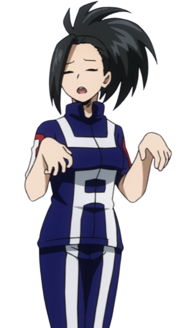

La Academia U.A tiene un sistema de ingreso dividido en dos partes, un examen escrito y un examen práctico. Debido a que reciben miles de postulantes cada año utilizan un ranking calificando en posiciones a los mejores postulantes para aceptarlos, El enfoque principal recae en el examen práctico justamente por lo anterior, porque de esa forma pueden medir las aptitudes físicas de cada postulante así como también el uso de sus Dones y su actitud frente a una situación de peligro. Como consecuencia, la tasa de ingreso a la academia es increíblemente baja.
A pesar de esto, la academia permite el ingreso de estudiantes por medio de recomendaciones, ya sea por ser hijos de algún héroe profesional , o por ser parte de una familia famosa y con gran influencia. Los ingresados por recomendación también tienen un examen práctico, aunque no tan complejos como el de los otros aspirantes, y una entrevista personal.
Uniformes

Clase de heroísmo
Clase Estudios Generales
Clase Equipo de apoyo
Clase de Gerencia